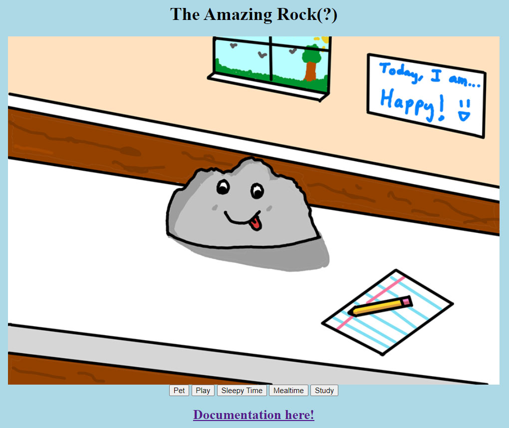
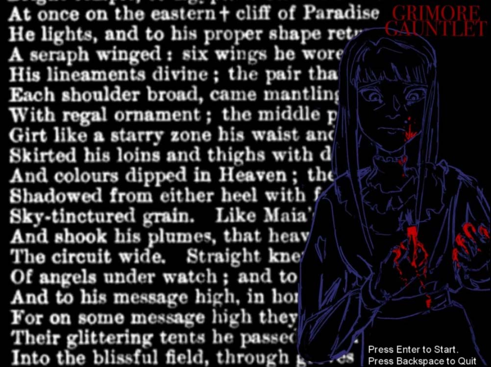
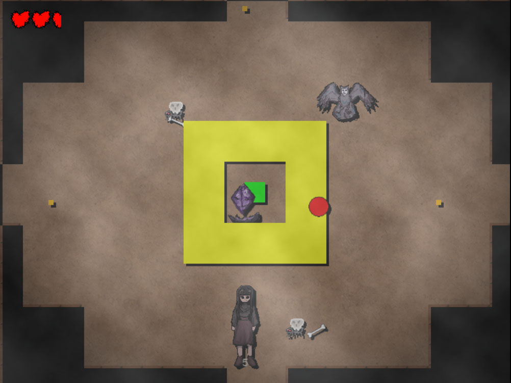

Projects
Virtual Pet (CS164)
In my Introduction to Computer Science course, our task for the final project was to create a virtual pet machine using what we had learned about programming and state machines. I chose to do a silly pet rock that has feelings despite its inhuman look.
Meet and play with a pet rock!Video Game (CI102/103)
 In my Computing and Informatics II and III classes, we formed teams with people who expressed similar interests in creating a certain type of project like a website, mobile app, video games, and more. My team and I brainstormed, designed, programmed, tested, and released a rogue-like video game inspired by rogue-like games like The Binding of Issac and Hades.
Play The Grimoire Gauntlet!